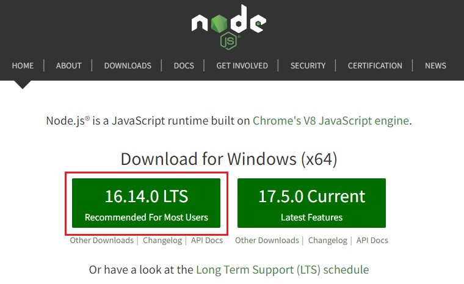
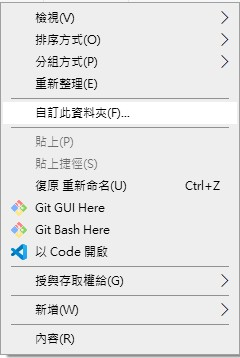

前言
儘管這幾年各種社群平台興起，舉凡眾所皆知的Fackbook、instagram、Twitter，乃至於Dcard、Telegram、Discord，讓許多人拋棄以往使用的部落格網站，像是時代的眼淚無名小站，但我始終覺得部落格有一種不為流量而耕耘的感覺，不是為了向朋友炫耀，也不是和家人摯友們分享，就是單純留給自己的一塊小空地，可以比較不在乎世俗外界的眼光，進而書寫自己想記錄的事物，寫文章何嘗不是一種好習慣?
身為一個資訊背景的研究生，其實這幾年不論是課業還是實驗室的工作，很常需要上網找資料自己解決問題，能夠自己解決問題而不是到處伸手牌好像成了工程師的一股傲氣(? (不過我也覺得變得越來越不會問問題了…這個以後再說)。總之，架設一個屬於自己的部落格有很多方式，我也嘗試過很多不同的平台，那這篇文章就是分享一下在Github Pages建立部落格的過程。
架設Hexo部落格
Hexo是一個基於Node.js開發的網站框架，適合快速開發個人部落格，Hexo除了編譯速度快，也有很豐富的外掛套件，更能讓開發者快速的部署到Github Pages上。
Step 0 Github帳號
因為部落格是基於Github Pages，所以必須要先有一個github帳號，申請帳號沒有很複雜，網路上也很多資源了，就不多加贅述。
Step 1 建立repoitory
有了github帳號後，透過建立一個專案存放所有部落格網站需要用到的資源(如下圖所示)，在Repository name中要填入<username>.github.io，其中username就是自己的帳號。
Step 2 建置Hexo環境
前置作業
Hexo是基於Node.js開發的，所以在使用hexo之前我們需要安裝Node.js，直接到他們的官方網站下載並安裝，選擇左邊的LTS(右邊是最新的版本，可能沒有經過大量的環境測試，較為不穩定)。
另外我們也需要安裝Git，幫助我們將網站部署到Github上或是clone不同模板的專案，安裝完成後在資料夾點擊右鍵如果可以看到下圖中的Git兩個選項就是安裝完成。
Hexo環境
完成安裝後就可以正式開始建置Hexo的環境了，打開上圖中的Git Bash Here(或是任何的CLI介面，如:cmd、終端機等)，並使用一下指令安裝Hexo:
1 | npm install hexo-cli -g |
安裝後可以透過以下指令檢查Hexo版本，確認安裝完成:
1 | hexo -v |
Hexo初始化
輸入指令建立Hexo資料夾，並安裝所需要的套件(要確認在新建立的資料夾底下安裝)。
1 | hexo init <資料夾名稱> |
安裝完成後會出現很多的資料夾以及檔案，幾個比較常用到的如下:
- scaffolds: 裡面放著
draft(草稿)、page(頁面)、post(文章)三種模板檔案，在hexo新增頁面、文章等時，會對應生成初始化的spec - source: 存放所有的資源檔，包含文章、圖片、頁面等，部署時這裡的檔案會被解析編譯並更新到Github上
- themes: 若有要使用其他主題或是第三方開發的主題模板，就要將相關檔案丟進此處
- public: 部署上傳後才會出現的資料夾，這裡的檔案就是Github上公開的檔案
- _config.yml: 關於網站配置的設定都放在這個文件中，可以在這裡改變網站的設定，如:網站名稱、作者、語言、使用主題、部署資訊等
其他檔案與資料夾比較少會使用到，如果有興趣或是未來需要可以再找相關資源。
部署到Github
完成Hexo初始建置後，就可以先將檔案等部署到Github上。在hexo資料夾底下輸入指令安裝需要的套件:
1 | npm install hexo-deployer-git --save |
到 _config.yml 中找到 Deployment 的區塊修改部署資訊，並將底下username改成自己的Github帳號:
1 | # Deployment |
接著將hexo部署上去:
1 | hexo deploy |
完成後就可以透過 https://<username>.github.io 的網址進入到個人部落格了! Github有時候沒辦法馬上更新，稍微等個幾分鐘就可以看到自己的網站了，下圖是hexo預設的landscape主題模板。
常用指令
Hexo的指令都可以在官方網站中搜尋，而部落格最常做的事情之一就是發文章了，這裡稍微簡述一下發一篇文章的流程:
新增一篇文章
1 | hexo new <title> |
- 文章支援Markdown語法，產生的檔案也是md檔
title只是md檔的檔名，實際文章的標題可以在md檔裡更改，建議不要有空格、非英文等，避免出錯- 新增後可以在
source/_posts/資料夾底下找到文章的md檔
更新並部署文章
1 | hexo clean // 清除靜態檔案與快取 |
也可以簡化成以下指令:
1 | hexo cl |
本地端伺服器
1 | hexo server // crtl+C 停止運行 |
指令打完就會看到server跑起來了，這時候到網頁打 http://localhost:4000/ 就可以看到自己的網頁。
我自己會先在本地端測試修改後再一次部署上去Github，因為檔案的修改可以馬上在本地端看到變動，也省去一直部署的麻煩。
結語
這篇文章講解了架部落格從0到1到過程，上述的指令大概就夠應付日常發文需求了，至於要怎麼讓部落格從1到100就是未來的工作了(我也還在學習當中…) 接下來我會講解一下我正在使用也是目前非常powerful的模板Next，使用這個開源的hexo主題模板可以省去非常多網站設計的時間的精力，也很不同的簡約風格，我個人滿喜歡的~